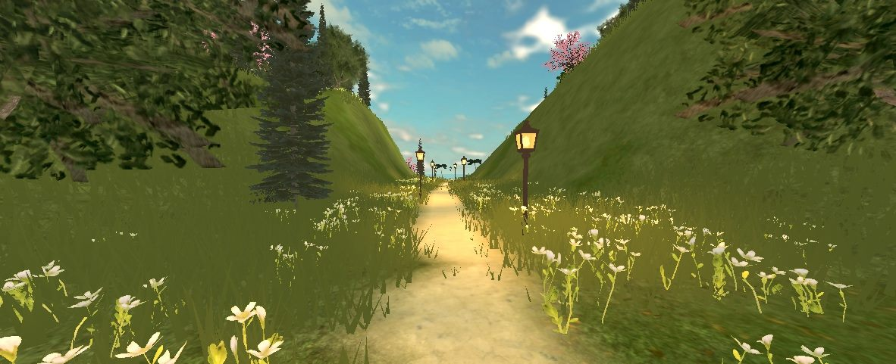
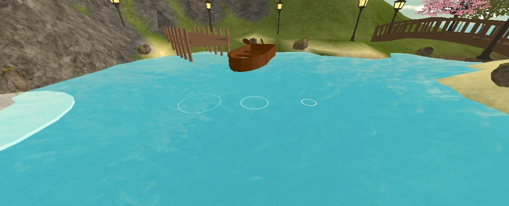
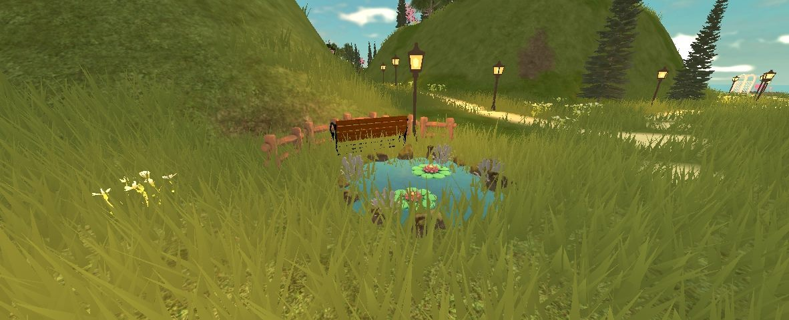
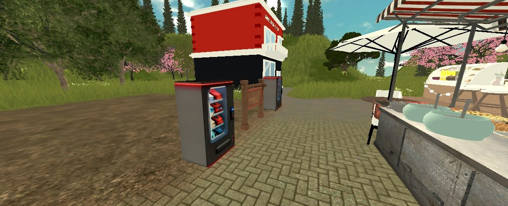
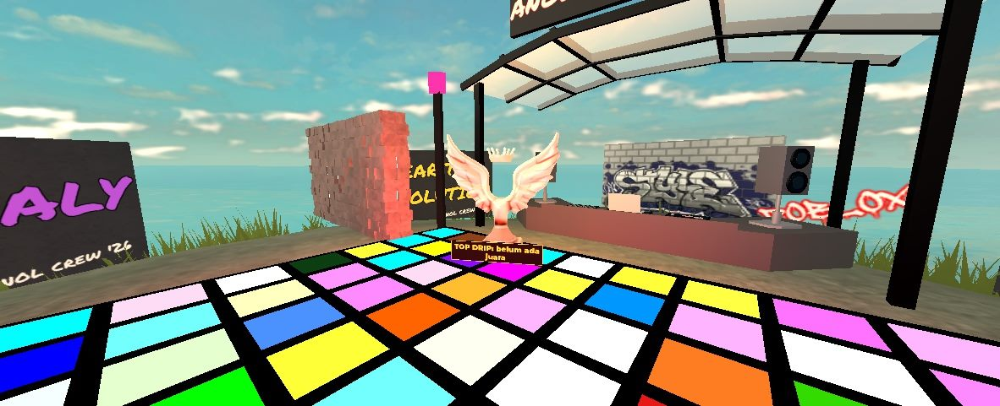
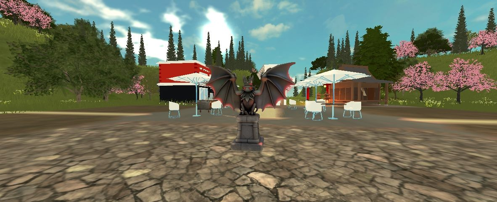
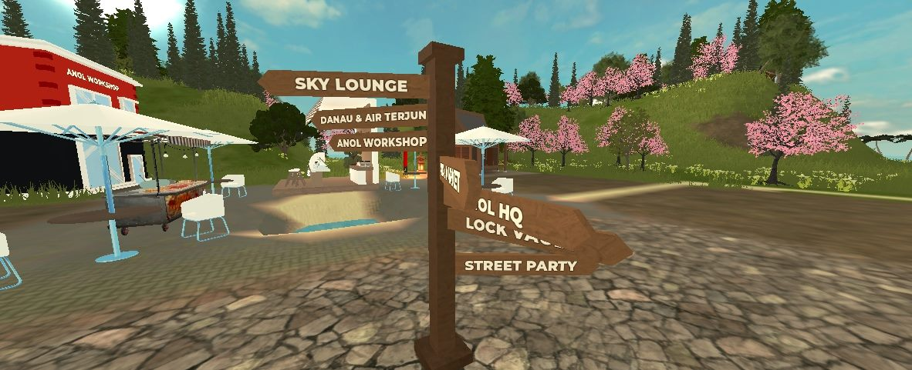

Game Roblox · Gratis
Bangun kebunmu di pulau misterius, tanam bahan langka, lalu racik streetwear Anolystic di Workshop. Trade dengan pemain lain dan pamerkan gayamu di ANOL Runway. Bisa dimainkan di HP, tablet, dan PC.

Isi Game
01
Klaim kebunmu, tanam Cotton sampai Croc Hide Root yang langka, panen, lalu jual hasilnya di Anol Market. Tanaman tetap tumbuh saat kamu offline.
02
Di Anol Workshop, gabungkan seed untuk menemukan tanaman baru, lalu craft hoodie, denim jacket, sampai Croc Club Bomber. Semua bisa langsung dipakai di avatar.
03
Tukar item dengan pemain lain lewat trade yang aman, atau pasang barang daganganmu di vending machine depan kebun.
04
Tiap beberapa menit langit plaza berubah merah dan Koin Anomaly berjatuhan. Kumpulkan untuk dapat seed langka dan Anol Cash.
05
Lomba outfit di pulau Street Party. Naik ke podium, pemain lain memilih gaya terbaik, dan juaranya memakai mahkota TOP DRIP.
06
Danau dan air terjun, kolam di padang, jalan setapak berlentera, pantai berperahu, Street Party, sampai Sky Lounge yang eksklusif.
GALERI PULAU 島
Langsung dari dalam game






Cara Mulai
Pasang Roblox di HP, tablet, atau PC, lalu masuk atau buat akun (gratis).
Klik tombol Main di Roblox di halaman ini, atau cari "ANOLYSTIC: Mystic Streets" di Roblox.
Ikuti tutorial singkat di layar: tanam seed pertamamu, buka Workshop, panen, lalu jual di Anol Market.
Catatan penting
Anol Cash, item, dan semua isi game hanya berlaku di dalam Roblox. Game ini tidak terhubung dengan token, NFT, atau kripto apa pun, dan isi game tidak bisa ditukar dengan uang atau barang.
Pembelian di dalam game hanya memakai Robux resmi Roblox. Kaos fisik Anolystic dijual terpisah di Tokopedia.
Ajak temanmu, bangun kebun bareng, dan rebut mahkota TOP DRIP.